Kestrel 使用说明
从第一条记到把删掉的东西捞回来。每一节都是先说要做什么，再给步子。
第一次打开
空库会先给你一篇文章都没有的界面，然后种下一个「Kestrel 使用指南」主题和 4 篇示例，外加今天这一篇日记。
- 直接在中间开始打字。写日记不用新建——它已经打开了今天。
- 想按主题写文章，看左栏第二格「主题」，点「新建文章」。
- 示例看完就可以删。它们都挂在同一个主题下面，删掉不会碰到你自己的任何一篇。
那 4 篇示例是故意留下的：双链、反链、图谱、标签树、属性分组、大纲这六样，都得先有点内容才看得见。
界面长什么样
三栏。左边选要看什么，中间写字，右边看这一篇的上下文。
- 左栏四格：今天 Ctrl+1 / 主题 Ctrl+2 / 标签 Ctrl+3 / 属性 Ctrl+4。
- 中间：正文。顶部一排小标签是你开着的几篇。
- 右栏：大纲、反向链接、出链、局部图谱、属性、历史、编年史，都能滚。
- 状态条：右下写着存没存、当前哪一档模式、是不是专注模式。
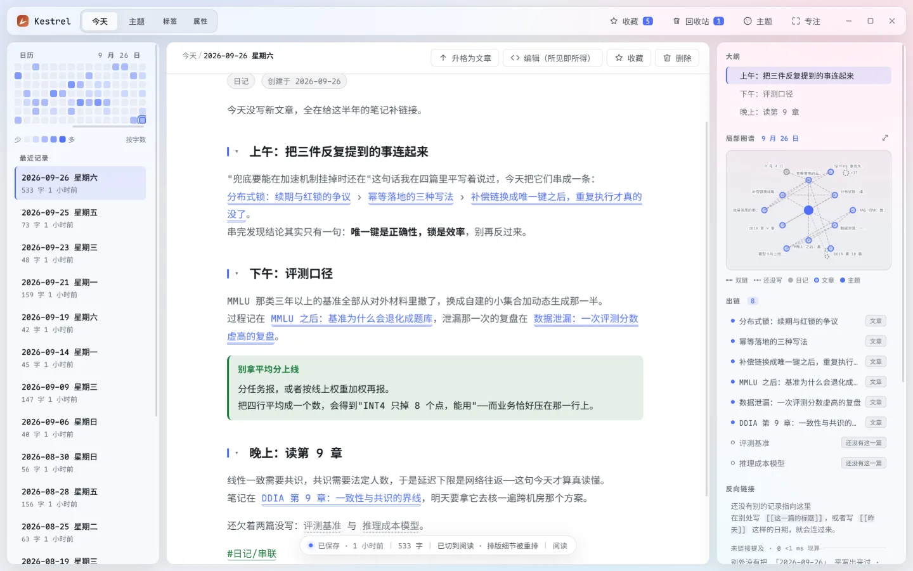
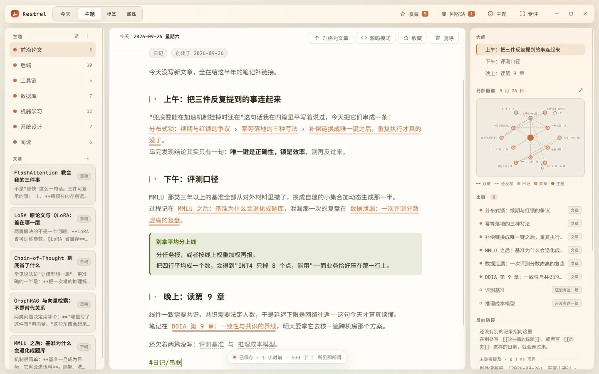
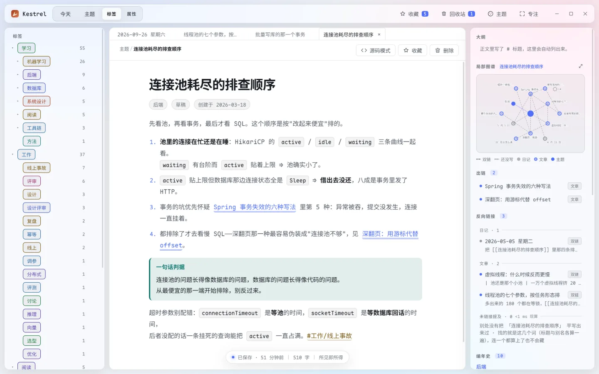
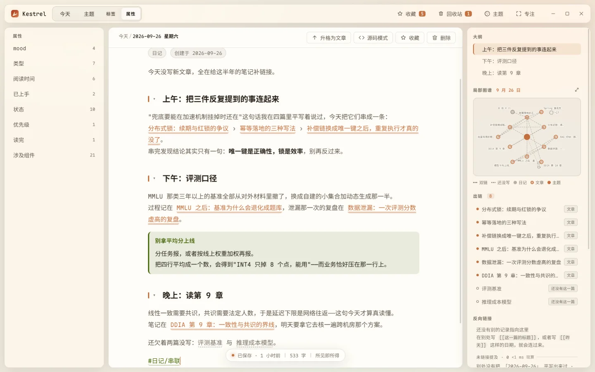
下载与校验
安装包在 Releases 页，文件名 Kestrel-<版本>-setup.exe。Windows 10 / 11 x64，装进你自己的账户，不需要管理员权限，向导是中文的。
只有 Windows 桌面版：没有手机版、没有网页版，Mac 和 Linux 也没有。手机上打不开这个 .exe——把这一页的地址发到电脑上再装。
- 下载后先对一下指纹（PowerShell）：
Get-FileHash .\Kestrel-0.1.0-setup.exe -Algorithm SHA256。 - 第一次运行会弹蓝色的 SmartScreen——安装包没有代码签名，这是没买证书的结果，不是恶意软件的特征。点「更多信息 → 仍要运行」。
- 装完打开，直接开始写。
v0.1.0 那一份：156,349,540 字节，SHA-256 ad4abd19… 之后的重建版为 c05094725873d13369e38f62af172b184f1f5c8c2b46c1689ffa032e54c88ba9（以 Releases 页写着的那一串为准）。
不想用别人的安装包，也可以拉源码自己打：npm install 之后 npm run dist。
写与存
要做的：把东西写下来，并且相信它不会丢。
- 日记按日期走，一天一篇；文章挂在主题下面。两种笔记体，同一种写法。
- 不用按保存。停下来半秒它就存了，右下角写「已保存」。想立刻落盘按 Ctrl+S——顺手留一版历史。
- 三档模式，用 Ctrl+Shift+M 轮：阅读（只看）→ 所见即所得（写）→ 源码（看原始的 Markdown）。
- 切到源码档之前它会先比一遍：确认改完还能原样回来才切。真会动到你的字，它就把你留在源码档并说清是哪几处——宁可切不过去，也不悄悄吃掉你写的东西。
- 写长文想收起小节：点标题左边那颗折叠箭头；Ctrl+K 搜「全部折叠」一次全收。
- 选中一段字，右下角会告诉你这一段多少字。
把一段想法变成一篇文章
- 在日记里选中那句话（或者什么都不选，整篇升）。
- 按 Ctrl+K，搜「升格」，回车。
- 挑一个主题，确认。原文连同样式一起搬过去，日记这边留下一行指回去的链接。
反过来也走通：文章里想指回某一天，打 [[2026-09-26]] 就行。
你已经会的那些 Markdown，全都算数
不用学新语法。下面这些写下去就是排好的样子：
- 标题、列表、任务项
- [ ] 待办、引用、分割线。 - 表格：打
|或用 Ctrl+K 搜「插入表格」，然后能用鼠标加行加列。 - 代码块：三个反引号开头写语言名，高亮与行号都有；
mermaid是特例，见下条。 - Callout：一行
> [!注意]开头，就是一只带图标的小盒子。 - 公式：行内
$E=mc^2$，独立一行$$…$$。 - 脚注：正文里写
[^1]，文末[^1]: 出处。 - Mermaid 图：围栏写
mermaid，图当场画出来；写坏了也不吞你的字，退成代码块给你看原因。 - 图片与附件：拖进来、或者 Ctrl+V 粘进来都行，文件收进库旁边的
attachments/。
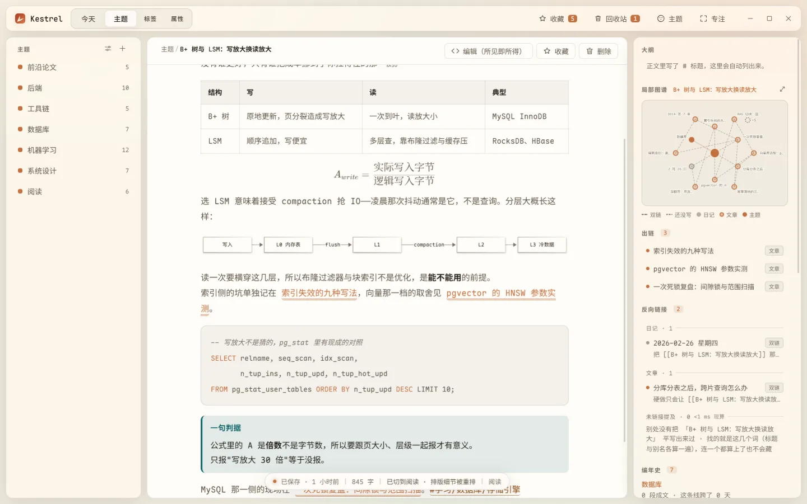
双链与嵌入
要做的：让这一句话指到另一篇去。
- 打两个左方括号
[[，候选窗会列出主题名、文章标题，还有「今天」「昨天」这类写法。 - ↑↓ 挑，Enter 定。Esc 只关窗——你打到一半的那截字原样留着，那是你打的字，不是菜单的字。
- 想指得跟上下文对上号，加个竖线：
[[向量数据库|那几家向量库]]。 - 整段搬过来：前面再加一个感叹号
![[那一节#小节名]]。只指不搬：[[#小节名]]指本篇的某节。 - 想知道那一头是什么，按住 Ctrl 把鼠标停在链接上——弹一张小卡，写着那一头的第一段和被几处指向。没写出来的那一篇也弹，而且它最有用：「这个写法已经被写了 N 处」。
还没写的那一篇：链接会画成虚线，不红、不报错。等你哪天补上，它自己就连上了。
一个写法想指到哪儿，你可以自己定：Ctrl+K 搜「别名」，开一扇窗，把 [[玻璃]] 这样的写法绑到某个主题或某一篇上，正文一个字都不用改。给主题改名时它还会问你要不要「旧名留作别名」；那条别名在窗口里看得见、删得掉，删掉之后那几处掉回虚线，不会静默消失。
右栏那两块：「反向链接」是别人怎么指到这一篇的（带上下文那一行）；「出链」是这一篇指到哪儿去了，哪几条还是虚线。底下偶尔冒出一组「未链接提及」——别处平写着这一篇的名字但没打成链接，一行一处，点「连上」只动你点的那一处。
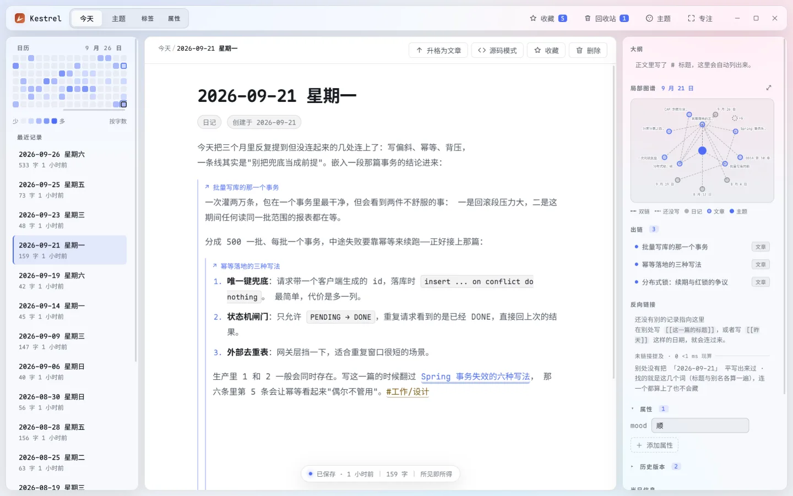
标签与属性
标签是散在正文里的词：写 #JVM/调优，左栏的标签树就长出这一支。中文不用打空格，#云铝股份 也算。父标签一起筛子孙。
属性是这一篇自己带的结构化字段。右栏最上面那格填：
- 类型有四种：文字、数字、清单、勾选。同一个属性名全库共用一种类型，写错了它会当场说哪里不对。
- 填好之后，左栏第四格「属性」按值分组：
状态 = 进行中的文章排在一堆，读完的排在另一堆。
收藏：这一篇按 Ctrl+D，标题栏那颗星标里有全部清单。
大纲在右栏，长正文不用一根滚轮滚到底——点一行跳一段。
在正文里问一句：查询块
- Ctrl+K 搜「插入查询块」，正文里落一块问句。
- 写清楚要什么：
状态=进行中 标签包含 机器学习这样的式子，也认今天、最近 7 天。 - 结果当场长在块里，五种摆法：列表、表格、卡片、日历、统计条。
- 常问的那句存成模板，下次一键插入；模板管理也在那扇窗里。
这块东西存进库的是问句本身，不是答案。所以它跟着导出、跟着备份，换台机器照样问得出来。
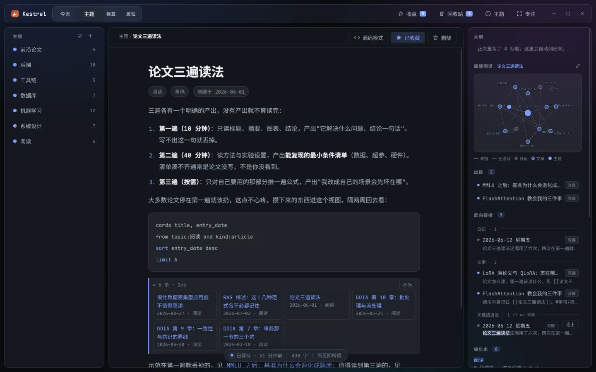
看看你的笔记长成什么形状
- 这一篇的邻居：右栏那块小图，两跳以内，颜色分日记 / 文章 / 主题，虚线是还没写出来的那一篇。
- 整个库：Ctrl+G 开全屏图谱，能拖动、能缩放到某一堆、能按主题收拢。
- 想按时间看：Ctrl+Shift+G 开时间轴那一档，密度格子 + 跨年同日的提示。
- 「反复提到」在右栏：某个链接被你在三个以上不同月份提过、而提到它的那些篇彼此一条链都没有，这一格就把那几篇摊出来，每行写「跨 7 个月 · 10 篇彼此没连」，你自己判要不要理。点「整理成一篇」只新建一篇空标题、把那几篇的双链摊进去——不合并、不代写、不删原篇。全库清单从 Ctrl+K 搜「思想重复度」。
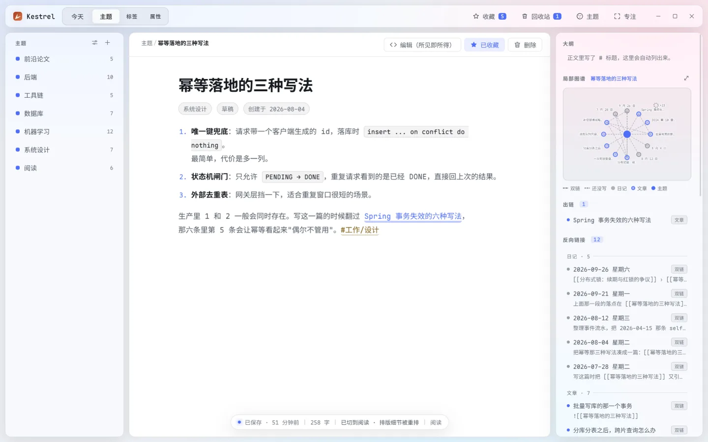
g-graph-full.png。搜索
按 Ctrl+F 输入词，全站搜（正文也搜，不只标题）。三档排序：综合、相关度、最近。想按时间优先翻旧账，选「最近」。
只知道大概名字？Ctrl+O 快速切换比搜索更快——它只挑记录与主题。
同时开几篇
- Ctrl+T 新开一篇，Ctrl+W 关掉当前，Ctrl+Tab 轮着切，Ctrl+Shift+←/→ 把这一格左右挪一位（也可以直接拖）。
- 侧栏的文章卡上 Ctrl+单击 或按鼠标中键，就是新开一格；中键点已经开着的那一篇是切过去，不会多出一格。
- 双击那一格是固定。固定的永远排最前，Ctrl+W 关不掉，得先取消固定。
- 每格带着自己的滚动位置、光标位置和模式。关掉应用再开，上次开着哪几篇、顺序、当前哪一格、各自滚到哪儿了，都原样回来。
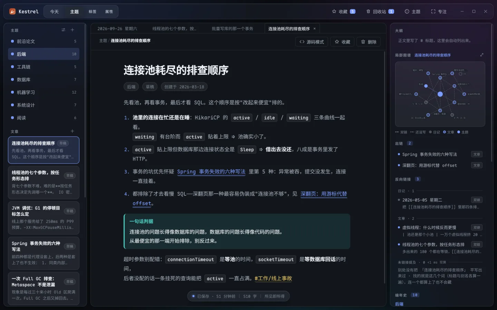
演示与随机
要给人看：Ctrl+K 搜「演示这一篇」。
- 在两个段落之间独占一行写
---就是分页（***、___、- - -一样算）。全屏一屏一页，页脚写3 / 12。 - 翻页：→ ↓ Space PageDown 往前，← ↑ Backspace PageUp 往后，Home End 首尾，点屏幕左 / 右半边也能翻。Esc 退出。翻到头不循环、也不报错。
- 代码块里那条
---不算分页，所以贴 diff 不会莫名多出页来。 - 只有一页时会给你一句提示，不会悄悄把整篇当一页、让你以为功能坏了。
- 字号在演示里比编辑时大一档——那只是显示放大，正文一个字都不改。演示开着时 Ctrl+K / Ctrl+W / Ctrl+Tab / Ctrl+, 一概不生效：底下不该有标签被关掉、文档被换掉。退出来那一格还在原处。
- 不做演讲者视图、备注与计时、自动播放。
想翻翻旧账：Ctrl+K 搜「随机」。它是新开一格而不是顶掉你正在写的那一篇，屏幕上会报开的是哪篇。连着按不重样，回收站里的不参与。它没有默认键位。
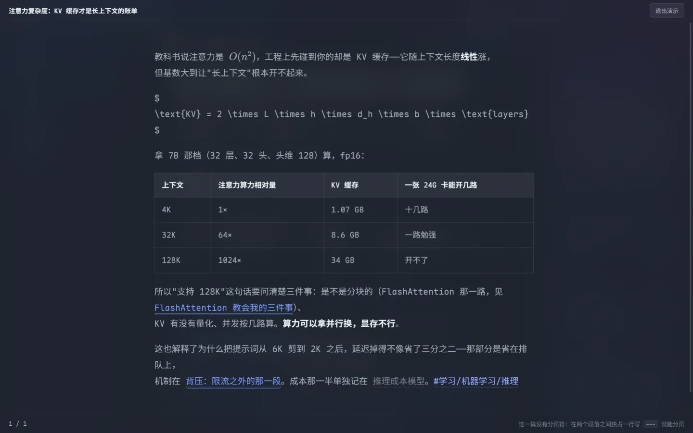
导出与导回
Ctrl+K 搜「导出为 Markdown」。整个库导成一棵目录树，每篇一个 .md，标题、主题、标签、属性铺在文件开头的 frontmatter 里——Obsidian 那类编辑器打开就是原生形状。
搜「从 Markdown 导回」可以把那棵树导回来。它认的是自家包头里的那串 kestrel-id：同一篇导回去不会多出重复。
这一对只保证自己家往返。别的软件导过来的目录，它一个字都不读——这不是没做完，是设计选择：通用导入的边界太长，做不好就是把你现有的库搞乱。
删掉了怎么找回
- 回收站：删除先软删进回收站（标题栏那颗垃圾桶）。找到那一行点「恢复」，指向它的链接一起接回来。满 30 天才会在开应用时清掉——而且只在当天那份快照已经在盘上的时候动手。等不及可以自己按「跑一次那一刀」，那句是你当场下的令。
- 历史版本：右栏最下面那格「历史」。每改一次自动留一版（同一篇两次至少隔 5 分钟，否则列表会变成一串「3 秒前 / 6 秒前」），每篇最多 50 版。Ctrl+S 强制留一版，不受这个门槛限制。挑一版点「恢复」——恢复之前会先把当前这一版存下，所以连恢复本身都能撤销。
- 改名之前先报数：给主题或标签改名，弹层先告诉你「全库有 N 处会被改」，动手之前那 N 篇各自先留一版历史。
- 库文件本身：卸载应用不会删
%APPDATA%\Kestrel。
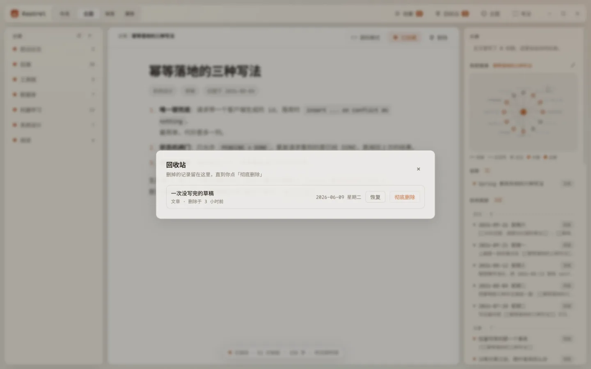
备份与恢复
- 开应用时如果当天还没落过一份，就往
%APPDATA%\Kestrel\backups\写一份，默认留最近 7 份（可设 3–30）。设置里那颗勾能关。 - 清单里每一份写着日期、篇数和大小。挑一份点「换过去」，整个库就换回去了；换之前当前库先自动存成
kestrel-before-restore-…，两个方向都退得回去。 - 别拿拷
.db文件当备份：应用开着的时候最近那些改动还在-wal里没回写主文件，只拷主文件拿到的是一部缺了最新改动的库。 - 快照只在本机，不做云盘。附件在旁边的
attachments/里、不跟着快照走，所以那份库拿到另一台机器上会指向缺文件的位置。
换台电脑：拷 kestrel.db 加 attachments/ 两个就够了。旧名 keeNote 时期升上来的机器，首次启动会把老库拷一份到新位置，老库原样留着当退路。
数据放在哪
- 一个文件：Windows 下
%APPDATA%\Kestrel\kestrel.db（SQLite）。 - 零网络请求：没有统计、没有更新检查、没有云；字体在安装包里。正文里的 http 链接被点击时交给系统浏览器打开，应用内不开新窗口。
- 多端 = 一个你挑的文件夹：Ctrl+K 搜「文件夹同步」。推 = 往那个夹里落一份完整的库加一份元数据；换回来走上面那条恢复的路。把那个夹放进 Dropbox / OneDrive / Syncthing 是你在同步，不是应用在发请求。那一份是明文的完整日记——它在谁的云盘账号里，你的日记就在谁那儿。
- 冲突的时候它不猜：比的是「相对上次同步，哪一边动过」。两边都动过就停下，把两边的篇数和最后改动时间并排摆出来，两颗按钮你自己挑。
- 那个夹里除了它自己写的两份文件出现的别的
.db（比如同步盘的冲突副本），Kestrel 一概不读、不删。
这一版会自己删东西的地方只有一处：回收站与历史版本满 30 天，会在开应用时被彻底删除，而且只在当天那份快照已经在盘上的时候动手。除此之外程序不会自己删掉你的任何内容。
还有一件它不替你做：同步没有定时器，推与拉两颗按钮都在人手上。
换外观
按 Ctrl+, 开设置。六格：外观 / 编辑器 / 片段 / 快捷键 / 数据 / 关于。每一项都落进库里，重启还在。
- 四套主题：白桦（亮色默认）、麦秸（亮色，长阅读）、松林（暗色默认）、薄荷（暗色，高对比）。勾「跟随系统」就在亮暗两档之间自己换。强调色各有几档预设。
- 字号是一整条阶梯一起调，不是只放大正文。
- 毛玻璃能关；关了之后界面变实色，读起来更安静。
想改得更深：把你的 .css 丢进 %APPDATA%\Kestrel\snippets\，立刻生效，删掉就撤回来。
- 生效顺序按文件名升序，跟你什么时候存盘无关；两份撞同一条选择器，名字靠后那份赢。
- 设置那一格能看到每一份的大小与改过的时间，能单独关掉某一份（关着的状态重启还在）。超过 1 MB 的那份不生效，但会列出来并写着为什么——静默失灵是最难查的那种失灵。
- 写坏了、界面被你藏起来了？Ctrl+K 搜「暂停全部片段」，或者启动时加
--no-snippets。暂停只影响本次运行，不改任何勾。 - 一句实测经验：直接改类选择器最稳（
.md-prose { … }这种，不用!important就盖得住）。要换主题变量得写body[data-theme] { --text-1: … }——写成body {}或:root {}压不住主题那一层。 - 片段是文件，不在库里：每日快照、导出、换库都不含它们。
- 片段里写
@import url(http://…)或背景图外链都出不了网——CSP 当场拦下。这跟「零网络请求」那句承诺是同一件事。
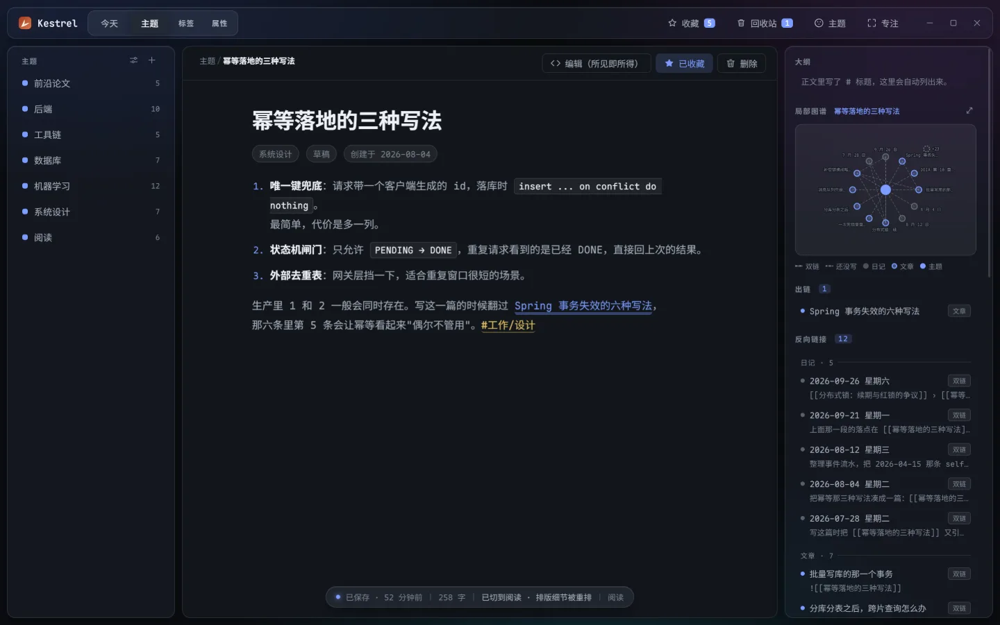
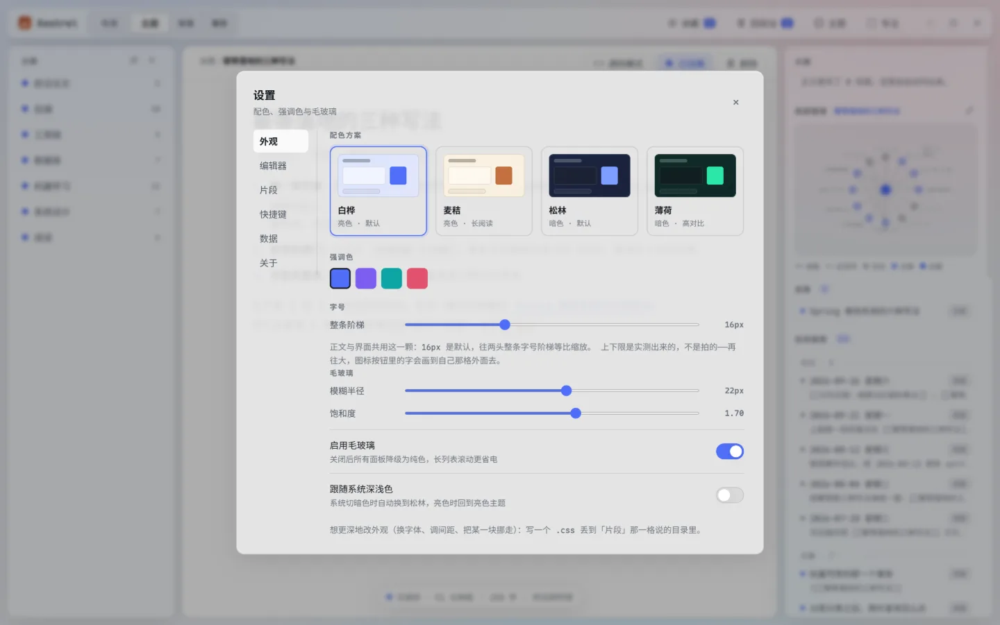
快捷键
Ctrl+K 是命令面板，所有功能都能从那儿搜到——想不起键位就搜名字，不必背这张表。macOS 上 Ctrl 表示 ⌘。
| 键位 | 命令 | 说明 |
|---|---|---|
| Ctrl+K / Ctrl+P | 命令面板 | 按分组列出所有命令 |
| Ctrl+O | 快速切换 | 跳到某条记录或主题 |
| Ctrl+T | 在新标签里打开… | 同一个面板，落点是新开一格 |
| Ctrl+W | 关掉当前标签 | 固定的那一格、以及最后一格都不关，也不关窗口 |
| Ctrl+Tab Ctrl+Shift+Tab | 循环切标签 | |
| Ctrl+Shift+← Ctrl+Shift+→ | 当前标签左右挪一位 | 不跨过固定那道界；也可以用拖的 |
| Ctrl+F | 站内搜索 | 三档排序：综合 / 相关度 / 最近 |
| Ctrl+G | 打开全局图谱 | |
| Ctrl+Shift+G | 全局图谱 · 时间轴 | 密度格子与跨年同日那一档 |
| Ctrl+1…Ctrl+4 | 切到 今天 / 主题 / 标签 / 属性 | 左栏四格 |
| Ctrl+N | 新建 | 日记模式打开今天，主题模式下新建文章 |
| Ctrl+Shift+M | 循环切换编辑器模式 | 阅读 → 所见即所得 → 源码 |
| Ctrl+S | 手动保存 | 存盘并留一版历史 |
| Ctrl+D | 收藏 / 取消收藏 | |
| Ctrl+Shift+F | 专注模式 | 把左右两栏收起来，只留正文 |
| Ctrl+Shift+T | 焦点给标签树 | |
| Ctrl+, | 设置 | 外观 / 编辑器 / 片段 / 快捷键 / 数据 / 关于 |
只从命令面板进、没有键位的：升格为文章、主题管理、回收站、删除当前记录、收藏列表、插入查询块、查询与模板、表格那一组、CSS 片段那一组、演示这一篇、随机打开一篇、导出与导回、备份与恢复、文件夹同步、分享这一篇、思想重复度全库清单。
两条别按习惯按：Ctrl+F 在这里是站内搜索、Ctrl+Shift+F 是专注模式，跟 Obsidian 不一样。同步那两颗按钮里有一颗会把当前库整个换掉，所以它不配一个"按一次回车就写盘"的默认键位。
它不做什么
下面这些不是「还没做」，是不打算做：
- 不做云同步（应用自己不联网）。多端那半边见上面「数据放在哪」里那个文件夹的办法。WebDAV / S3 那种"应用自己连出去"的形态没做，因为它改了开头那句「零网络请求」。
- 不用
.md目录当存储格式。双链、反链、属性、历史版本这些跨文件的索引，一旦以文件为存储就得每次打开重算，库一大就慢。这里存 SQLite，那棵 Markdown 是导出来的。代价说清楚：库文件损坏时没法像纯文本那样手工改。 - 不做协作与多人编辑。这是个人工具。
- 不做插件系统。要做的能力直接做进主程序，否则界面一致性保不住。想改外观有 CSS 片段那扇门。
- 不做移动端。
- 不追求和 Obsidian 功能对齐。它是最重要的参照对象，但参照的是交互习惯，不是清单。
Issues 开在这个仓库上。用不上 / 别扭 / 数据不放心，这三类反馈最值钱。